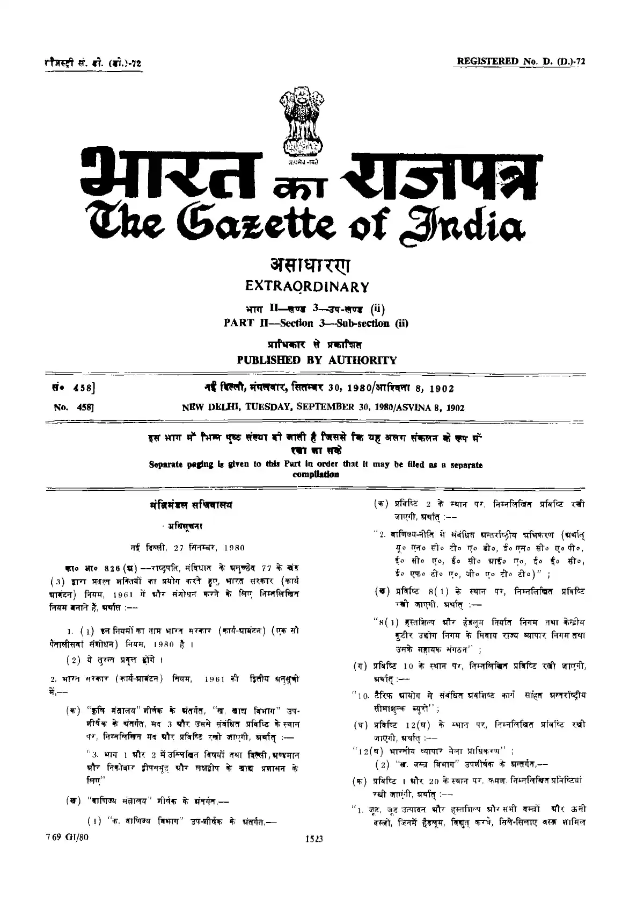
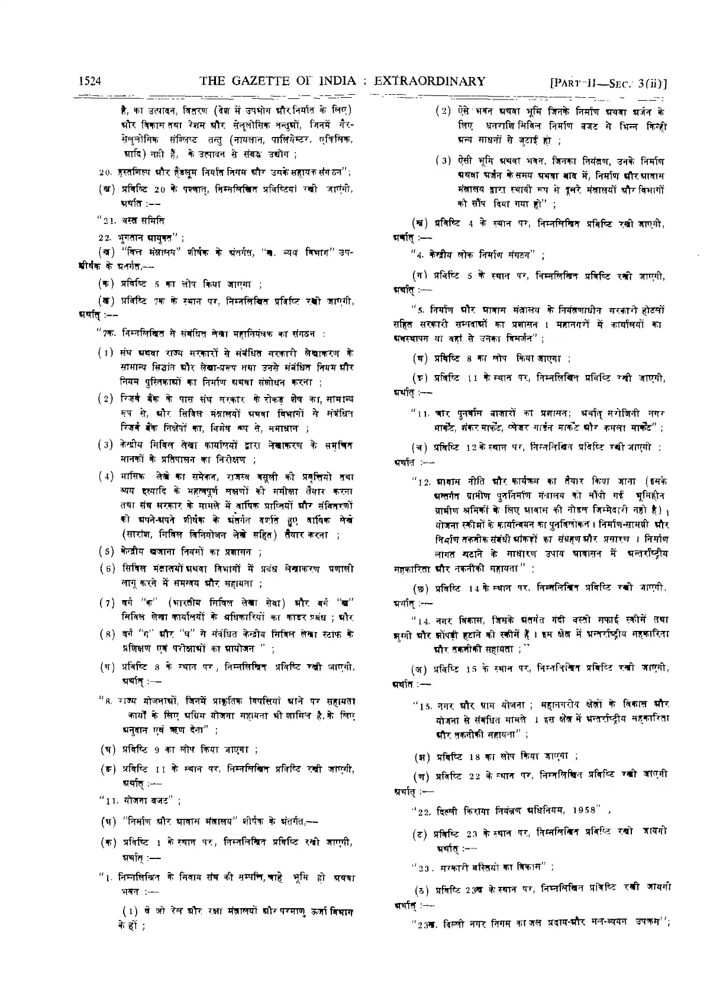
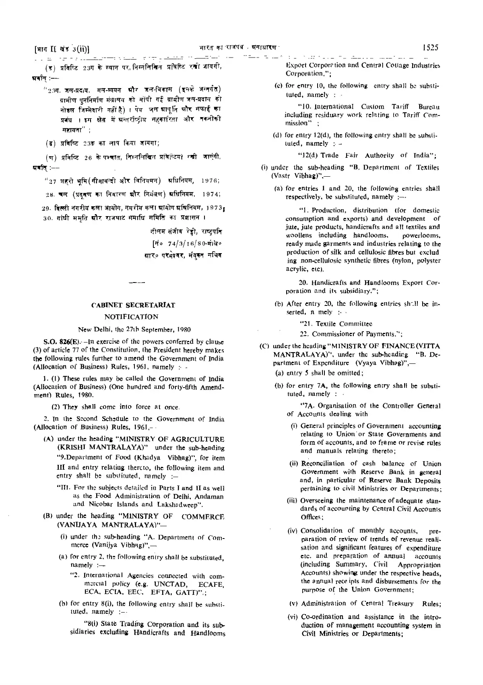
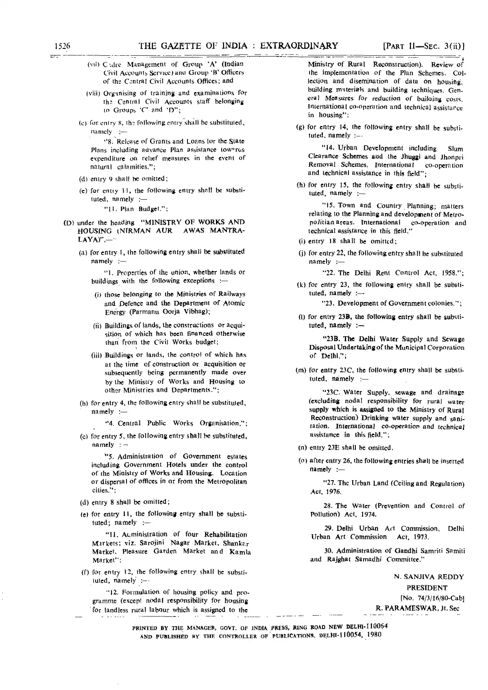

Amendment #145 (S.O. 826(E), 1980)
27 changes: 0 to the First Schedule, 27 to the Second Schedule. 26 applied1 not applied
The order, page by page
Page 1 of 4

Page 2 of 4

Page 3 of 4

123456789Schedule 2 › MINISTRY OF AGRICULTURE › Department of Food › item III
- III. For the subjects detailed in Parts I and II as well as the Food Administration of Delhi, Andaman and Nicobar Islands and Lakshadweep
applied at schedule 2 › ministry Ministry of Agriculture › department B › group_heading IV › entry 11 › item iii in the Rules after #145
Schedule 2 › MINISTRY OF COMMERCE › Department of Com- merce › entry 2
- 2. International Agencies connected with commercial policy (e.g. UNCTAD, ECAFE ECA, ECIA, EEC, EFTA, GATT)
applied at schedule 2 › ministry Ministry of Commerce › department A › group_heading I › entry 2 in the Rules after #145
states inferred loose
Schedule 2 › MINISTRY OF COMMERCE › Department of Com- merce › entry 8(i)
- 8.
- i. State Trading Corporation and its subsidiaries excluding Handicrafts and Handlooms Export Corporation and Central Cottage Industries Corporation.
applied at schedule 2 › ministry Ministry of Commerce › department A › group_heading III › entry 8 › item i in the Rules after #145
states inferred loose
Schedule 2 › MINISTRY OF COMMERCE › Department of Com- merce › entry 10
- 10. International Custom Tariff Bureau including residuary work relating to Tariff Commission
applied at schedule 2 › ministry Ministry of Commerce › department A › group_heading IV › entry 10 in the Rules after #145
states inferred loose
Schedule 2 › MINISTRY OF COMMERCE › Department of Com- merce › entry 12(d)
- 12.
- d. Trade Fair Authority of India
applied at schedule 2 › ministry Ministry of Commerce › department A › group_heading IV › entry 12 › item d in the Rules after #145
states inferred loose
Schedule 2 › MINISTRY OF COMMERCE › Department of Textiles › entry 1; Schedule 2 › MINISTRY OF COMMERCE › Department of Textiles › entry 20
- 1. Production, distribution (for domestic consumption and exports) and development of jute, jute products, handicrafts and all textiles and woollens including handlooms, powerlooms ready made garments and industries relating to the production of silk and cellulosic fibres but exclud ing…
- 20. Handicrafts and Handlooms Export Corporation and its subsidiary.
applied at schedule 2 › ministry Ministry of Commerce › department B › entry 1 in the Rules after #145
after Schedule 2 › MINISTRY OF COMMERCE › Department of Textiles › entry 20
- 21. Textile Committee
- 22. Commissioner of Payments.
applied at schedule 2 › ministry Ministry of Commerce › department B › entry 21 in the Rules after #145
Schedule 2 › MINISTRY OF FINANCE › De- partment of Expenditure › entry 5
applied at schedule 2 › ministry MINISTRY OF FINANCE › department B › entry 5 in the Rules after #145
Schedule 2 › MINISTRY OF FINANCE › De- partment of Expenditure › entry 7A
- 7A. Organisation of the Controller General of Accounts dealing with
- i. General principles of Government accounting relating to Union or State Governments and form of accounts, and to frame or revise rules and manuals relating thereto
- ii. Reconciliation of cash balance of Union Government with Reserve Bank in general and, in particular of Reserve Bank Deposits pertaining to civil Ministries or Departments
- iii. Overseeing the maintenance of adequate standards of accounting by Central Civil Accounts Offices
- iv. Consolidation of monthly accounts, preparation of review of trends of revenue realisation and significant features of expenditure etc. and preparation of annual accounts (including Summary, Civil Appropriation Accounts) showing under the respective heads the annual receipts and disbursements for…
- v. Administration of Central Treasury Rules
and 2 more
- vi. Co-ordination and assistance in the introduction of management accounting system in Civil Ministries or Departments
- vii. Cidre Management of Group 'A' (Indian Civil Accounts Service) and Group 'B' Officers of the Central Civil Accounts Offices; and (viii) Organising of training and examinations for the Central Civil Accounts staff belonging to Groups 'C' and 'D
applied at schedule 2 › ministry MINISTRY OF FINANCE › department B › entry 7A in the Rules after #145
read page break
Page 4 of 4

101112131415161718192021222324252627Schedule 2 › MINISTRY OF FINANCE › De- partment of Expenditure › entry 8
- 8. Release of Grants and Loans for the State Plans including advance Plan assistance towarus expenditure on relief measures in the event of natural calamities.
not applied (the change could not be placed in the Rules as read; see How this document was read)
Schedule 2 › MINISTRY OF FINANCE › De- partment of Expenditure › entry 9
applied at schedule 2 › ministry MINISTRY OF FINANCE › department B › entry 9 in the Rules after #145
Schedule 2 › MINISTRY OF FINANCE › De- partment of Expenditure › entry 11
- 11. Plan Budget.
applied at schedule 2 › ministry MINISTRY OF FINANCE › department B › entry 11 in the Rules after #145
Schedule 2 › MINISTRY OF WORKS AND HOUSING › entry 1
- 1. Properties of the union, whether lands or buildings with the following exceptions :-
- i. those belonging to the Ministries of Railways and Defence and the Department of Atomic Energy (Parmanu Oorja Vibhag)
- ii. Buildings of lands, the constructions or acquisition of which has been financed otherwise than from the Civil Works budget
- iii. Buildings or lands, the control of which has at the time of construction or acquisition or subsequently being permanently made over by the Ministry of Works and Housing to other Ministries and Departments.
applied at schedule 2 › ministry MINISTRY OF WORKS AND HOUSING › entry 1 in the Rules after #145
Schedule 2 › MINISTRY OF WORKS AND HOUSING › entry 4
- 4. Central Public Works Organisation
applied at schedule 2 › ministry MINISTRY OF WORKS AND HOUSING › entry 4 in the Rules after #145
Schedule 2 › MINISTRY OF WORKS AND HOUSING › entry 5
- 5. Administration of Government estates including Government Hotels under the control of the Ministry of Works and Housing. Location or dispersal of offices in or from the Metropolitan cities.
applied at schedule 2 › ministry MINISTRY OF WORKS AND HOUSING › entry 5 in the Rules after #145
Schedule 2 › MINISTRY OF WORKS AND HOUSING › entry 8
applied at schedule 2 › ministry MINISTRY OF WORKS AND HOUSING › entry 8 in the Rules after #145
Schedule 2 › MINISTRY OF WORKS AND HOUSING › entry 11
- 11. Acministration of four Rehabilitation Markets; viz. Sarojini Nagar Market, Shankar Market. Pleasure Garden Market and Kamla Market
applied at schedule 2 › ministry MINISTRY OF WORKS AND HOUSING › entry 11 in the Rules after #145
Schedule 2 › MINISTRY OF WORKS AND HOUSING › entry 12
- 12. Formulation of housing policy and programme (except nodal responsibility for housing for landless rural labour which is assigned to the Ministry of Rural Reconstruction). Review of the implementation of the Plan Schemes. Collection and disemination of data on housing building materials and…
applied at schedule 2 › ministry MINISTRY OF WORKS AND HOUSING › entry 12 in the Rules after #145
read page break
Schedule 2 › MINISTRY OF WORKS AND HOUSING › entry 14
- 14. Urban Development including Slum Clearance Schemes and the Jhuggi and Jhonpri Removal Schemes. International co-operation and technical assistance in this field
applied at schedule 2 › ministry MINISTRY OF WORKS AND HOUSING › entry 14 in the Rules after #145
Schedule 2 › MINISTRY OF WORKS AND HOUSING › entry 15
- 15. Town and Country Planning; matters relating to the Planning and development of Metropolitian areas. International co-operation and technical assistance in this field
applied at schedule 2 › ministry MINISTRY OF WORKS AND HOUSING › entry 15 in the Rules after #145
Schedule 2 › MINISTRY OF WORKS AND HOUSING › entry 18
applied at schedule 2 › ministry MINISTRY OF WORKS AND HOUSING › entry 18 in the Rules after #145
Schedule 2 › MINISTRY OF WORKS AND HOUSING › entry 22
- 22. The Delhi Rent Control Act, 1958.
applied at schedule 2 › ministry MINISTRY OF WORKS AND HOUSING › entry 22 in the Rules after #145
Schedule 2 › MINISTRY OF WORKS AND HOUSING › entry 23
- 23. Development of Government colonies.
applied at schedule 2 › ministry MINISTRY OF WORKS AND HOUSING › entry 23 in the Rules after #145
Schedule 2 › MINISTRY OF WORKS AND HOUSING › entry 23B
- 23B. The Delhi Water Supply and Sewage Disposal Undertaking of the Municipal Corporation of Delhi.
applied at schedule 2 › ministry MINISTRY OF WORKS AND HOUSING › entry 23B in the Rules after #145
Schedule 2 › MINISTRY OF WORKS AND HOUSING › entry 23C
- 23C. Water Supply, sewage and drainage (excluding nodal responsibility for rural water supply which is assigned to the Ministry of Rural Reconstruction) Drinking water supply and sanitation. International co-operation and technical assistance in this field.
applied at schedule 2 › ministry MINISTRY OF WORKS AND HOUSING › entry 23C in the Rules after #145
Schedule 2 › MINISTRY OF WORKS AND HOUSING › entry 23E
applied at schedule 2 › ministry MINISTRY OF WORKS AND HOUSING › entry 23E in the Rules after #145
after Schedule 2 › MINISTRY OF WORKS AND HOUSING › entry 26
- 27. The Urban Land (Ceiling and Regulation) Act, 1976
- 28. The Water (Prevention and Control of Pollution) Act, 1974.
- 29. Delhi Urban Art Commission, Delhi Urban Art Commission Act, 1973.
- 30. Administration of Gandhi Samriti Samiti and Rajghat Samadhi Committee.
applied at schedule 2 › ministry MINISTRY OF WORKS AND HOUSING › entry 27 in the Rules after #145
How this document was read
Changes placed by an inference rule
| Change | Rule | Status | What |
|---|---|---|---|
| 2 | loose | accepted | change 2: department Department of Com- merce taken for department DEPARTMENT OF COMMERCF, named loosely |
| 3 | loose | accepted | change 3: department Department of Com- merce taken for department DEPARTMENT OF COMMERCF, named loosely |
| 4 | loose | accepted | change 4: department Department of Com- merce taken for department DEPARTMENT OF COMMERCF, named loosely |
| 5 | loose | accepted | change 5: department Department of Com- merce taken for department DEPARTMENT OF COMMERCF, named loosely |
Known issues
| Change | Issue | Known as |
|---|---|---|
| 10 | change 10: no entry 8 under schedule 2 › ministry MINISTRY OF FINANCE › department B | Entries not in the state |
From the Government of India (Allocation of Business) Rules, 1961 and their amendments, as published by the Cabinet Secretariat (cabsec.gov.in), read by orgpedia. The readings of the older scanned gazettes have known gaps.